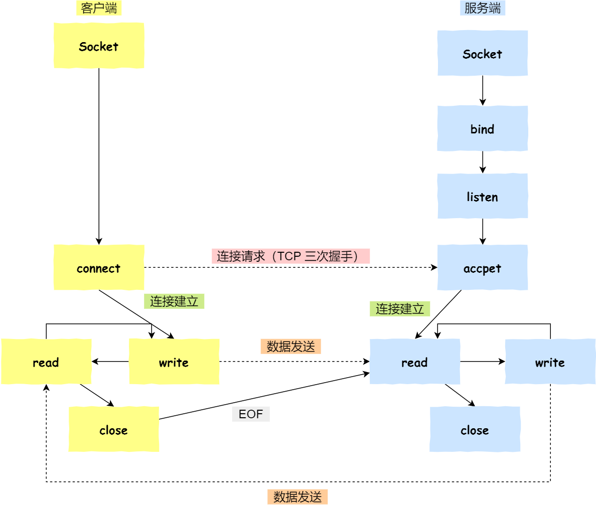

<!DOCTYPE html>


<html lang="zh-CN">


<head>
  <meta charset="utf-8" />
    
  <meta name="viewport" content="width=device-width, initial-scale=1, maximum-scale=1" />
  <title>
    Socket编程 —— 使用 select、poll、epoll |  JsyBlog
  </title>
  <meta name="generator" content="hexo-theme-ayer">
  
  <link rel="shortcut icon" href="/images/ayer.png" />
  
  
<link rel="stylesheet" href="/dist/main.css">

  <link rel="stylesheet" href="https://cdn.jsdelivr.net/gh/Shen-Yu/cdn/css/remixicon.min.css">
  
<link rel="stylesheet" href="/css/custom.css">

  
  <script src="https://cdn.jsdelivr.net/npm/pace-js@1.0.2/pace.min.js"></script>
  
  

  

</head>

</html>

<body>
  <div id="app">
    
      
      <canvas width="1777" height="841"
        style="position: fixed; left: 0px; top: 0px; z-index: 99999; pointer-events: none;"></canvas>
      
    <main class="content on">
      <section class="outer">
  <article
  id="post-socket"
  class="article article-type-post"
  itemscope
  itemprop="blogPost"
  data-scroll-reveal
>
  <div class="article-inner">
    
    <header class="article-header">
       
<h1 class="article-title sea-center" style="border-left:0" itemprop="name">
  Socket编程 —— 使用 select、poll、epoll
</h1>
 

    </header>
     
    <div class="article-meta">
      <a href="/2021/11/20/socket/" class="article-date">
  <time datetime="2021-11-20T12:27:00.000Z" itemprop="datePublished">2021-11-20</time>
</a> 
  <div class="article-category">
    <a class="article-category-link" href="/categories/IO/">IO</a>
  </div>
  
<div class="word_count">
    <span class="post-time">
        <span class="post-meta-item-icon">
            <i class="ri-quill-pen-line"></i>
            <span class="post-meta-item-text"> 字数统计:</span>
            <span class="post-count">3.1k</span>
        </span>
    </span>

    <span class="post-time">
        &nbsp; | &nbsp;
        <span class="post-meta-item-icon">
            <i class="ri-book-open-line"></i>
            <span class="post-meta-item-text"> 阅读时长≈</span>
            <span class="post-count">11 分钟</span>
        </span>
    </span>
</div>
 
    </div>
      
    <div class="tocbot"></div>


  
    <div class="article-entry" itemprop="articleBody">
       
  <h2 id="socket编程"><a href="#socket编程" class="headerlink" title="socket编程"></a>socket编程</h2>


<ol>
<li><p>服务端和客户端初始化 socket ，得到⽂件描述符；</p>
</li>
<li><p>服务端调⽤ bind ，将绑定在 IP 地址和端⼝;</p>
</li>
<li><p>服务端调⽤ listen ，进⾏监听；</p>
</li>
<li><p>服务端调⽤ accept ，等待客户端连接；</p>
</li>
<li><p>客户端调⽤ connect ，向服务器端的地址和端⼝发起连接请求；</p>
</li>
<li><p>服务端 accept 返回⽤于传输的 socket 的⽂件描述符；</p>
</li>
<li><p>客户端调⽤ write 写⼊数据；服务端调⽤ read 读取数据；</p>
</li>
<li><p>客户端断开连接时，会调⽤ close ，那么服务端 read 读取数据的时候，就会读取到了 EOF ，待处理完</p>
</li>
</ol>
<p>数据后，服务端调⽤ close ，表示连接关闭。</p>
<p>这⾥需要注意的是，服务端调⽤ accept 时，连接成功了会返回⼀个已完成连接的 socket，后续⽤来传输数据。</p>
<p>所以，监听的 socket 和真正⽤来传送数据的 socket，是两个 socket，⼀个叫作<strong>监听 socket</strong>，⼀个叫作<strong>已完成连接 socket</strong>。</p>
<p>成功连接建⽴之后，双⽅开始通过 read 和 write 函数来读写数据，就像往⼀个⽂件流⾥⾯写东⻄⼀样。</p>
<h2 id="select函数"><a href="#select函数" class="headerlink" title="select函数"></a>select函数</h2><p>select 实现多路复⽤的⽅式是，<strong>将已连接的 Socket 都放到⼀个⽂件描述符集合</strong>，</p>
<p>然后<strong>调⽤ select 函数将⽂件描述符集合拷⻉到内核⾥，让内核来检查是否有⽹络事件产⽣</strong>，检查的⽅式很粗暴，就是通过<strong>遍历⽂件描述符集合的⽅式</strong>，<strong>当检查到有事件产⽣后，将此 Socket 标记为可读或可写， 接着再把整个⽂件描述符集合拷⻉回⽤户态⾥</strong>，然后⽤户态还需要<strong>再通过遍历的⽅法找到可读或可写的 Socke</strong>t，然后再对其处</p>
<p>理。</p>
<p>所以，对<strong>于 select 这种⽅式，需要进⾏ 2 次「遍历」⽂件描述符集合</strong>，⼀次是在内核态⾥，⼀个次是在<strong>⽤户态</strong> ，⽽且还会发⽣ <strong>2</strong> 次「拷⻉」⽂件描述符集合，先从⽤户空间传⼊内核空间，由内核修改后，再传出到⽤户空间中。</p>
<p>select 使⽤固定⻓度的 BitsMap，表示⽂件描述符集合，⽽且<strong>所⽀持的⽂件描述符的个数是有限制的</strong>，在</p>
<p>Linux 系统中，由内核中的 FD_SETSIZE 限制， 默认最⼤值为 1024 ，只能监听 0~1023 的⽂件描述符。</p>
<h2 id="poll-函数"><a href="#poll-函数" class="headerlink" title="poll 函数"></a>poll 函数</h2><p><strong>poll 不再⽤位图或数组来存储所关注的⽂件描述符，取⽽代之⽤动态数组</strong>，以<strong>链表形式来组织，突破了</strong></p>
<p><strong>select 的⽂件描述符个数限制</strong>，当然还会受到系统⽂件描述符限制。</p>
<p>但是 poll 和 select 并没有太⼤的本质区别，都是使⽤「线性结构」存储进程关注的 <strong>Socket</strong> 集合，因此<strong>都需要遍历⽂件描述符集合</strong>来找到可读或可写的 <strong>Socket</strong>，时间复杂度为 **O(n)**，</p>
<p>⽽且<strong>也需要在⽤户态与内核态之间拷⻉⽂件描述符集合</strong>，这种⽅式随着并发数上来，性能的损耗会呈指数级增⻓。</p>
<h2 id="epoll-函数"><a href="#epoll-函数" class="headerlink" title="epoll 函数"></a>epoll 函数</h2><p>epoll 通过两个⽅⾯，很好解决了 select/poll 的问题。</p>
<ul>
<li>第⼀点，epoll 在内核⾥<strong>使⽤红⿊树来跟踪进程所有待检测的⽂件描述符</strong>，把需要监控的 socket 通过</li>
</ul>
<p><code>epoll_ctl()</code> 函数加⼊内核中的红⿊树⾥，红⿊树是个⾼效的数据结构，增删查⼀般时间复杂度是</p>
<p>O(logn) ，通过对这棵⿊红树进⾏操作，<strong>这样就不需要像 select/poll 每次操作时都传⼊整个 socket 集合，只需要传⼊⼀个待检测的 socket，减少了内核和⽤户空间⼤量的数据拷⻉和内存分配</strong>。</p>
<ul>
<li>第⼆点， epoll 使⽤<strong>事件驱动</strong>的机制，<strong>内核⾥维护了⼀个链表来记录就绪事件</strong>，<strong>当某个 socket 有事件发⽣时，通过回调函数内核会将其加⼊到这个就绪事件列表中</strong>，当⽤户调⽤ <code>epoll_wait() </code>函数时，<strong>只会返回有事件发⽣的⽂件描述符的个数，不需要像 select/poll 那样轮询扫描整个 socket 集合</strong>，⼤⼤提⾼了检测的效率。<br></li>
</ul>
<h3 id="相关接口"><a href="#相关接口" class="headerlink" title="相关接口"></a>相关接口</h3><p>epoll API是Linux专有的特性，相较于<code>select</code>和<code>poll</code>，<code>epoll</code>更加灵活且<strong>没有描述符限制</strong>。<code>epoll</code>设计也与<code>select</code>和<code>poll</code>不同，主要包含以下三个接口：</p>
<figure class="highlight c"><table><tr><td class="gutter"><pre><span class="line">1</span><br><span class="line">2</span><br><span class="line">3</span><br></pre></td><td class="code"><pre><span class="line"><span class="function"><span class="keyword">int</span> <span class="title">epoll_create</span><span class="params">(<span class="keyword">int</span> size)</span></span>;</span><br><span class="line"><span class="function"><span class="keyword">int</span> <span class="title">epoll_ctl</span><span class="params">(<span class="keyword">int</span> epfd, <span class="keyword">int</span> op, <span class="keyword">int</span> fd, struct epoll_event *event)</span></span>;</span><br><span class="line"><span class="function"><span class="keyword">int</span> <span class="title">epoll_wait</span><span class="params">(<span class="keyword">int</span> epfd, struct epoll_event * events, <span class="keyword">int</span> maxevents, <span class="keyword">int</span> timeout)</span></span>;</span><br></pre></td></tr></table></figure>


<blockquote>
<p>下面依次介绍。</p>
</blockquote>
<h4 id="epoll-create"><a href="#epoll-create" class="headerlink" title="epoll_create()"></a>epoll_create()</h4><figure class="highlight"><table><tr><td class="gutter"><pre><span class="line">1</span><br></pre></td><td class="code"><pre><span class="line">int epoll_create(int size)；//创建一个epoll的句柄，size用来告诉内核这个监听的数目一共有多大</span><br></pre></td></tr></table></figure>

<p>创建一个epoll的句柄，size用来告诉内核这个监听的数目一共有多大，这个参数不同于select()中的第一个参数，给出最大监听的fd+1的值，<em>参数size并不是限制了epoll所能监听的描述符最大个数，只是对内核初始分配内部数据结构的一个建议</em>。<br>当创建好epoll句柄后，它就会占用一个fd值，在linux下如果查看/proc/进程id/fd/，是能够看到这个fd的，所以在使用完epoll后，必须调用close()关闭，否则可能导致fd被耗尽。</p>
<h4 id="int-epoll-ctl"><a href="#int-epoll-ctl" class="headerlink" title="int epoll_ctl()"></a>int epoll_ctl()</h4><figure class="highlight c"><table><tr><td class="gutter"><pre><span class="line">1</span><br></pre></td><td class="code"><pre><span class="line"><span class="function"><span class="keyword">int</span> <span class="title">epoll_ctl</span><span class="params">(<span class="keyword">int</span> epfd, <span class="keyword">int</span> op, <span class="keyword">int</span> fd, struct epoll_event *ev)</span></span>; <span class="comment">//修改兴趣列表（事件注册函数）</span></span><br></pre></td></tr></table></figure>

<p>该函数是对指定描述符fd执行op操作。</p>
<ul>
<li>epfd：是epoll_create()的返回值。</li>
<li>op：表示op操作，用三个宏来表示：1. <code>EPOLL_CTL_ADD</code>注册新的fd到epfd中；2. <code>EPOLL_CTL_MOD</code>修改已经注册的fd的监听事件；3. <code>EPOLL_CTL_DEL</code>从<code>epfd</code>中删除一个fd。</li>
<li>fd：是需要监听的fd（文件描述符）</li>
<li>epoll_event：是告诉内核需要监听什么事，struct epoll_event结构如下：</li>
</ul>
<figure class="highlight c"><table><tr><td class="gutter"><pre><span class="line">1</span><br><span class="line">2</span><br><span class="line">3</span><br><span class="line">4</span><br></pre></td><td class="code"><pre><span class="line"><span class="class"><span class="keyword">struct</span> <span class="title">epoll_event</span> &#123;</span></span><br><span class="line">  <span class="keyword">__uint32_t</span> events;  <span class="comment">/* Epoll events */</span></span><br><span class="line">  <span class="keyword">epoll_data_t</span> data;  <span class="comment">/* User data variable */</span></span><br><span class="line">&#125;;</span><br></pre></td></tr></table></figure>

<p><strong>events可以是以下几个宏的集合</strong>：</p>
<ol>
<li>EPOLLIN ：表示对应的文件描述符可以读（包括对端SOCKET正常关闭）；</li>
<li>EPOLLOUT：表示对应的文件描述符可以写；</li>
<li>EPOLLPRI：表示对应的文件描述符有紧急的数据可读（这里应该表示有带外数据到来）；</li>
<li>EPOLLERR：表示对应的文件描述符发生错误；</li>
<li>EPOLLHUP：表示对应的文件描述符被挂断；</li>
<li>EPOLLET： bsEPOLL设为边缘触发（Edge Triggered)模式，这是相对于水平触发(Level Triggered）来说的。</li>
<li>EPOLLONESHOT：只监听一次事件，当监听完这次事件之后，如果还需要继续监听这个socket的话，需要再次把这个socket加入到EPOLL队列里。</li>
</ol>
<p>其中<code>data</code>的类型为：</p>
<figure class="highlight c"><table><tr><td class="gutter"><pre><span class="line">1</span><br><span class="line">2</span><br><span class="line">3</span><br><span class="line">4</span><br><span class="line">5</span><br><span class="line">6</span><br></pre></td><td class="code"><pre><span class="line"><span class="keyword">typedef</span> <span class="class"><span class="keyword">union</span> <span class="title">epoll_data</span> &#123;</span></span><br><span class="line">  <span class="keyword">void</span>    *ptr; <span class="comment">//pointer to user defined data</span></span><br><span class="line">  <span class="keyword">int</span>     fd; <span class="comment">//file descriptor</span></span><br><span class="line">  uint_32 u32; <span class="comment">//32-bit integer</span></span><br><span class="line">  uint_64 u64; <span class="comment">//64-bit integer</span></span><br><span class="line">&#125; <span class="keyword">epoll_data_t</span>;</span><br></pre></td></tr></table></figure>

<p><strong><code>data</code>字段是唯一可以获知同这个事件相关的文件描述符的途径</strong>，因此调用<code>epoll_ctl()</code>将文件描述符添加到兴趣列表中时，应该要么将<code>ev.data.fd</code>设为文件描述符，要么将<code>ev.data.ptr</code>设为指向包含该文件描述的结构体。</p>
<h4 id="int-epoll-wait"><a href="#int-epoll-wait" class="headerlink" title="int epoll_wait()"></a>int epoll_wait()</h4><figure class="highlight c"><table><tr><td class="gutter"><pre><span class="line">1</span><br></pre></td><td class="code"><pre><span class="line"><span class="function"><span class="keyword">int</span> <span class="title">epoll_wait</span><span class="params">(<span class="keyword">int</span> epfd, struct epoll_event *evlist, <span class="keyword">int</span> maxevents, <span class="keyword">int</span> timeout)</span></span>;</span><br></pre></td></tr></table></figure>

<p>数组<code>evlist</code>的空间由调用者负责申请;</p>
<p>等待epfd上的io事件，最多返回maxevents个事件。<br>参数evlist用来从内核得到事件的集合，maxevents告之内核这个evlist有多大，这个maxevents的值不能大于创建epoll_create()时的size，参数timeout是超时时间（毫秒，0会立即返回，-1将不确定，也有说法说是永久阻塞）。<strong>该函数返回需要处理的事件数目，如返回0表示已超时</strong>。</p>
<h3 id="epoll的工作模式"><a href="#epoll的工作模式" class="headerlink" title="epoll的工作模式"></a>epoll的工作模式</h3><p>epoll对文件描述符的操作有两种模式：<strong>LT（level trigger）</strong>和<strong>ET（edge trigger）</strong>。LT模式是默认模式，LT模式与ET模式的区别如下：</p>
<p><strong>LT模式</strong>：当epoll_wait检测到描述符事件发生并将此事件通知应用程序，<strong>应用程序可以不立即处理该事件</strong>。下次调用epoll_wait时，会再次响应应用程序并通知此事件。</p>
<p><strong>ET模式</strong>：当epoll_wait检测到描述符事件发生并将此事件通知应用程序，<strong>应用程序必须立即处理该事件</strong>。如果不处理，下次调用epoll_wait时，不会再次响应应用程序并通知此事件。</p>
<p>LT模式下，<strong>主要缓冲区数据一次没有处理完，那么下次<code>epoll_wait</code>返回时，还会返回这个句柄</strong>；</p>
<p>而ET模式下，缓冲区数据一次没处理结束，那么下次就不会再通知了，只在第一次返回．所以在ET模式下，一般是通过while循环，一次性读完全部数据<strong>．epoll默认使用的是LT</strong>．</p>
<h4 id="1-LT模式"><a href="#1-LT模式" class="headerlink" title="1. LT模式"></a>1. LT模式</h4><p>LT(level triggered)是默认的工作方式，并且<strong>同时支持block和no-block</strong> socket.在这种做法中，内核告诉你一个文件描述符是否就绪了，然后你可以对这个就绪的fd进行IO操作。如果你不作任何操作，内核还是会继续通知你的。</p>
<h4 id="2-ET模式"><a href="#2-ET模式" class="headerlink" title="2. ET模式"></a>2. ET模式</h4><p><strong>ET(edge-triggered)是高速工作方式</strong>，只支持no-block socket。在这种模式下，当描述符从未就绪变为就绪时，内核通过epoll告诉你。然后它会假设你知道文件描述符已经就绪，并且不会再为那个文件描述符发送更多的就绪通知，直到你做了某些操作导致那个文件描述符不再为就绪状态了(比如，你在发送，接收或者接收请求，或者发送接收的数据少于一定量时导致了一个EWOULDBLOCK 错误）。但是请注意，如果一直不对这个fd作IO操作(从而导致它再次变成未就绪)，内核不会发送更多的通知(only once)</p>
<p><strong>ET模式在很大程度上减少了epoll事件被重复触发的次数</strong>，因此效率要比LT模式高。epoll工作在ET模式的时候，<strong>必须使用非阻塞套接口</strong>，以避免由于一个文件句柄的阻塞读/阻塞写操作把处理多个文件描述符的任务饿死。</p>
<p><strong>假如有这样一个例子：</strong></p>
<ol>
<li>我们已经把一个用来从管道中读取数据的文件句柄(RFD)添加到epoll描述符</li>
<li>这个时候从管道的另一端被写入了2KB的数据</li>
<li>调用epoll_wait(2)，并且它会返回RFD，说明它已经准备好读取操作</li>
<li>然后我们读取了1KB的数据</li>
<li>调用epoll_wait(2)（两种工作模式有不同的差别）</li>
</ol>
<p><strong>LT模式：</strong><br>如果是LT模式，那么在第5步调用epoll_wait(2)之后，仍然能受到通知。</p>
<p><strong>ET模式：</strong><br>只有在监视的文件句柄上发生了某个事件的时候 ET 工作模式才会汇报事件。因此在第5步的时候，调用者可能会放弃等待仍在存在于文件输入缓冲区内的剩余数据。</p>
<h3 id="epoll的实现原理"><a href="#epoll的实现原理" class="headerlink" title="epoll的实现原理"></a>epoll的实现原理</h3><p>在linux，一切皆文件．所以当调用<code>epoll_create</code>时，内核给这个<code>epoll</code>分配一个文件描述符，但是这个不是普通的文件，而是只服务于epoll。</p>
<p>当内核初始化epoll时，会开辟一块内核高速缓冲区，用于放置我们监听的对端socket，这些socket会以<strong>红黑树节点的形式</strong>保存在内核的<code>cache</code>里，以支持快速的查找，插入，删除。</p>
<p>同时，建立了一个<strong>list链表，用于存储准备就绪的事件</strong>．所以调用<code>epoll_wait</code>时，在timeout时间内，只是简单的观察这个list链表是否有数据，如果没有，则睡眠至超时时间到返回；如果有数据，则在超时时间到，拷贝至用户态<code>events</code>数组中．</p>
<p><em>那么，这个准备就绪list链表是怎么维护的呢？</em><br>当我们执行<code>epoll_ctl()</code>时，除了把socket_fd放到epoll系统里对应的红黑树上之外，还会<strong>给内核中断处理程序注册一个回调函数</strong>，告诉内核，<strong>如果这个句柄的中断到了，就把它放到准备就绪list链表里</strong>。所以，当一个socket上有数据到了，内核在把网卡上的数据copy到内核中后就来把socket插入到准备就绪链表里了。</p>
<p>epoll主要由两个结构体：eventpoll与epitem。epitem是每一个IO所对应的的事件。比如 <code>epoll_ctl()</code>的<code>EPOLL_CTL_ADD</code>操作的时候，就需要创建一个<code>epitem</code>。<code>eventpoll</code>是每一个epoll所对应的。比如<code>epoll_create</code>就是创建一个<code>eventpoll</code>。如下图所示，<code>eventpoll</code> 包含了 <code>lock</code>、<code>mtx</code>、<code>wq（等待队列）</code>与 <code>rdlist</code> 等成员，其中 <code>rdlist</code> 和 <code>rbr</code> 是我们所关心的。</p>
 
      <!-- reward -->
      
    </div>
    

    <!-- copyright -->
    
    <div class="declare">
      <ul class="post-copyright">
        <li>
          <i class="ri-copyright-line"></i>
          <strong>版权声明： </strong>
          
          本博客所有文章除特别声明外，著作权归作者所有。转载请注明出处！
          
        </li>
      </ul>
    </div>
    
    <footer class="article-footer">
       
<div class="share-btn">
      <span class="share-sns share-outer">
        <i class="ri-share-forward-line"></i>
        分享
      </span>
      <div class="share-wrap">
        <i class="arrow"></i>
        <div class="share-icons">
          
          <a class="weibo share-sns" href="javascript:;" data-type="weibo">
            <i class="ri-weibo-fill"></i>
          </a>
          <a class="weixin share-sns wxFab" href="javascript:;" data-type="weixin">
            <i class="ri-wechat-fill"></i>
          </a>
          <a class="qq share-sns" href="javascript:;" data-type="qq">
            <i class="ri-qq-fill"></i>
          </a>
          <a class="douban share-sns" href="javascript:;" data-type="douban">
            <i class="ri-douban-line"></i>
          </a>
          <!-- <a class="qzone share-sns" href="javascript:;" data-type="qzone">
            <i class="icon icon-qzone"></i>
          </a> -->
          
          <a class="facebook share-sns" href="javascript:;" data-type="facebook">
            <i class="ri-facebook-circle-fill"></i>
          </a>
          <a class="twitter share-sns" href="javascript:;" data-type="twitter">
            <i class="ri-twitter-fill"></i>
          </a>
          <a class="google share-sns" href="javascript:;" data-type="google">
            <i class="ri-google-fill"></i>
          </a>
        </div>
      </div>
</div>

<div class="wx-share-modal">
    <a class="modal-close" href="javascript:;"><i class="ri-close-circle-line"></i></a>
    <p>扫一扫，分享到微信</p>
    <div class="wx-qrcode">
      
    </div>
</div>

<div id="share-mask"></div>  
  <ul class="article-tag-list" itemprop="keywords"><li class="article-tag-list-item"><a class="article-tag-list-link" href="/tags/IO/" rel="tag">IO</a></li><li class="article-tag-list-item"><a class="article-tag-list-link" href="/tags/Linux/" rel="tag">Linux</a></li><li class="article-tag-list-item"><a class="article-tag-list-link" href="/tags/Socket/" rel="tag">Socket</a></li></ul>

    </footer>
  </div>

   
  <nav class="article-nav">
    
      <a href="/2021/11/20/Linux%E8%AF%BB%E5%86%99%E6%96%87%E4%BB%B6%E7%9B%B8%E5%85%B3%E5%BA%93%E5%87%BD%E6%95%B0/" class="article-nav-link">
        <strong class="article-nav-caption">上一篇</strong>
        <div class="article-nav-title">
          
            Linux读写文件相关库函数
          
        </div>
      </a>
    
    
      <a href="/2021/11/20/Unix%E4%B8%AD%E7%9A%84%E4%BA%94%E7%A7%8D%20IO%20%E6%A8%A1%E5%9E%8B/" class="article-nav-link">
        <strong class="article-nav-caption">下一篇</strong>
        <div class="article-nav-title">Unix/Linux 中的五种 IO 模型</div>
      </a>
    
  </nav>

  
   
     
</article>

</section>
      <footer class="footer">
  <div class="outer">
    <ul>
      <li>
        Copyrights &copy;
        2020-2022
        <i class="ri-heart-fill heart_icon"></i> SongyangJi
      </li>
    </ul>
    <ul>
      <li>
        
      </li>
    </ul>
    <ul>
      <li>
        
      </li>
    </ul>
    <ul>
      
    </ul>
    <ul>
      
    </ul>
    <ul>
      <li>
        <!-- cnzz统计 -->
        
        <script type="text/javascript" src=''></script>
        
      </li>
    </ul>
  </div>
</footer>
      <div class="float_btns">
        <div class="totop" id="totop">
  <i class="ri-arrow-up-line"></i>
</div>

<div class="todark" id="todark">
  <i class="ri-moon-line"></i>
</div>

      </div>
    </main>
    <aside class="sidebar on">
      <button class="navbar-toggle"></button>
<nav class="navbar">
  
  <div class="logo">
    <a href="/"></a>
  </div>
  
  <ul class="nav nav-main">
    
    <li class="nav-item">
      <a class="nav-item-link" href="/">主页</a>
    </li>
    
    <li class="nav-item">
      <a class="nav-item-link" href="/archives">归档</a>
    </li>
    
    <li class="nav-item">
      <a class="nav-item-link" href="/categories">分类</a>
    </li>
    
    <li class="nav-item">
      <a class="nav-item-link" href="/tags">标签</a>
    </li>
    
  </ul>
</nav>
<nav class="navbar navbar-bottom">
  <ul class="nav">
    <li class="nav-item">
      
      <a class="nav-item-link nav-item-search"  title="搜索">
        <i class="ri-search-line"></i>
      </a>
      
      
    </li>
  </ul>
</nav>
<div class="search-form-wrap">
  <div class="local-search local-search-plugin">
  <input type="search" id="local-search-input" class="local-search-input" placeholder="Search...">
  <div id="local-search-result" class="local-search-result"></div>
</div>
</div>
    </aside>
    <script>
      if (window.matchMedia("(max-width: 768px)").matches) {
        document.querySelector('.content').classList.remove('on');
        document.querySelector('.sidebar').classList.remove('on');
      }
    </script>
    <div id="mask"></div>

<!-- #reward -->
<div id="reward">
  <span class="close"><i class="ri-close-line"></i></span>
  <p class="reward-p"><i class="ri-cup-line"></i>请我喝杯咖啡吧~</p>
  <div class="reward-box">
    
    
  </div>
</div>
    
<script src="/js/jquery-2.0.3.min.js"></script>


<script src="/js/lazyload.min.js"></script>

<!-- Tocbot -->


<script src="/js/tocbot.min.js"></script>

<script>
  tocbot.init({
    tocSelector: '.tocbot',
    contentSelector: '.article-entry',
    headingSelector: 'h1, h2, h3, h4, h5, h6',
    hasInnerContainers: true,
    scrollSmooth: true,
    scrollContainer: 'main',
    positionFixedSelector: '.tocbot',
    positionFixedClass: 'is-position-fixed',
    fixedSidebarOffset: 'auto'
  });
</script>

<script src="https://cdn.jsdelivr.net/npm/jquery-modal@0.9.2/jquery.modal.min.js"></script>
<link rel="stylesheet" href="https://cdn.jsdelivr.net/npm/jquery-modal@0.9.2/jquery.modal.min.css">
<script src="https://cdn.jsdelivr.net/npm/justifiedGallery@3.7.0/dist/js/jquery.justifiedGallery.min.js"></script>

<script src="/dist/main.js"></script>

<!-- ImageViewer -->

<!-- Root element of PhotoSwipe. Must have class pswp. -->
<div class="pswp" tabindex="-1" role="dialog" aria-hidden="true">

    <!-- Background of PhotoSwipe. 
         It's a separate element as animating opacity is faster than rgba(). -->
    <div class="pswp__bg"></div>

    <!-- Slides wrapper with overflow:hidden. -->
    <div class="pswp__scroll-wrap">

        <!-- Container that holds slides. 
            PhotoSwipe keeps only 3 of them in the DOM to save memory.
            Don't modify these 3 pswp__item elements, data is added later on. -->
        <div class="pswp__container">
            <div class="pswp__item"></div>
            <div class="pswp__item"></div>
            <div class="pswp__item"></div>
        </div>

        <!-- Default (PhotoSwipeUI_Default) interface on top of sliding area. Can be changed. -->
        <div class="pswp__ui pswp__ui--hidden">

            <div class="pswp__top-bar">

                <!--  Controls are self-explanatory. Order can be changed. -->

                <div class="pswp__counter"></div>

                <button class="pswp__button pswp__button--close" title="Close (Esc)"></button>

                <button class="pswp__button pswp__button--share" style="display:none" title="Share"></button>

                <button class="pswp__button pswp__button--fs" title="Toggle fullscreen"></button>

                <button class="pswp__button pswp__button--zoom" title="Zoom in/out"></button>

                <!-- Preloader demo http://codepen.io/dimsemenov/pen/yyBWoR -->
                <!-- element will get class pswp__preloader--active when preloader is running -->
                <div class="pswp__preloader">
                    <div class="pswp__preloader__icn">
                        <div class="pswp__preloader__cut">
                            <div class="pswp__preloader__donut"></div>
                        </div>
                    </div>
                </div>
            </div>

            <div class="pswp__share-modal pswp__share-modal--hidden pswp__single-tap">
                <div class="pswp__share-tooltip"></div>
            </div>

            <button class="pswp__button pswp__button--arrow--left" title="Previous (arrow left)">
            </button>

            <button class="pswp__button pswp__button--arrow--right" title="Next (arrow right)">
            </button>

            <div class="pswp__caption">
                <div class="pswp__caption__center"></div>
            </div>

        </div>

    </div>

</div>

<link rel="stylesheet" href="https://cdn.jsdelivr.net/npm/photoswipe@4.1.3/dist/photoswipe.min.css">
<link rel="stylesheet" href="https://cdn.jsdelivr.net/npm/photoswipe@4.1.3/dist/default-skin/default-skin.min.css">
<script src="https://cdn.jsdelivr.net/npm/photoswipe@4.1.3/dist/photoswipe.min.js"></script>
<script src="https://cdn.jsdelivr.net/npm/photoswipe@4.1.3/dist/photoswipe-ui-default.min.js"></script>

<script>
    function viewer_init() {
        let pswpElement = document.querySelectorAll('.pswp')[0];
        let $imgArr = document.querySelectorAll(('.article-entry img:not(.reward-img)'))

        $imgArr.forEach(($em, i) => {
            $em.onclick = () => {
                // slider展开状态
                // todo: 这样不好，后面改成状态
                if (document.querySelector('.left-col.show')) return
                let items = []
                $imgArr.forEach(($em2, i2) => {
                    let img = $em2.getAttribute('data-idx', i2)
                    let src = $em2.getAttribute('data-target') || $em2.getAttribute('src')
                    let title = $em2.getAttribute('alt')
                    // 获得原图尺寸
                    const image = new Image()
                    image.src = src
                    items.push({
                        src: src,
                        w: image.width || $em2.width,
                        h: image.height || $em2.height,
                        title: title
                    })
                })
                var gallery = new PhotoSwipe(pswpElement, PhotoSwipeUI_Default, items, {
                    index: parseInt(i)
                });
                gallery.init()
            }
        })
    }
    viewer_init()
</script>

<!-- MathJax -->

<script type="text/x-mathjax-config">
  MathJax.Hub.Config({
      tex2jax: {
          inlineMath: [ ['$','$'], ["\\(","\\)"]  ],
          processEscapes: true,
          skipTags: ['script', 'noscript', 'style', 'textarea', 'pre', 'code']
      }
  });

  MathJax.Hub.Queue(function() {
      var all = MathJax.Hub.getAllJax(), i;
      for(i=0; i < all.length; i += 1) {
          all[i].SourceElement().parentNode.className += ' has-jax';
      }
  });
</script>

<script src="https://cdn.jsdelivr.net/npm/mathjax@2.7.6/unpacked/MathJax.js?config=TeX-AMS-MML_HTMLorMML"></script>
<script>
  var ayerConfig = {
    mathjax: true
  }
</script>

<!-- Katex -->


    
        <link rel="stylesheet" href="https://cdn.jsdelivr.net/npm/katex@0.11.1/dist/katex.min.css">
        <script src="https://cdn.jsdelivr.net/npm/katex@0.11.1/dist/katex.min.js"></script>
        <script src="https://cdn.jsdelivr.net/npm/katex@0.11.1/dist/contrib/auto-render.min.js"></script>
        
            <script src="https://cdn.jsdelivr.net/npm/katex@0.11.1/dist/contrib/copy-tex.min.js"></script>
            <link rel="stylesheet" href="https://cdn.jsdelivr.net/npm/katex@0.11.1/dist/contrib/copy-tex.min.css">
        
    


<!-- busuanzi  -->

<!-- ClickLove -->

<!-- ClickBoom1 -->

<!-- ClickBoom2 -->


<script src="/js/clickBoom2.js"></script>


<!-- CodeCopy -->


<link rel="stylesheet" href="/css/clipboard.css">

<script src="https://cdn.jsdelivr.net/npm/clipboard@2/dist/clipboard.min.js"></script>
<script>
  function wait(callback, seconds) {
    var timelag = null;
    timelag = window.setTimeout(callback, seconds);
  }
  !function (e, t, a) {
    var initCopyCode = function(){
      var copyHtml = '';
      copyHtml += '<button class="btn-copy" data-clipboard-snippet="">';
      copyHtml += '<i class="ri-file-copy-2-line"></i><span>COPY</span>';
      copyHtml += '</button>';
      $(".highlight .code pre").before(copyHtml);
      $(".article pre code").before(copyHtml);
      var clipboard = new ClipboardJS('.btn-copy', {
        target: function(trigger) {
          return trigger.nextElementSibling;
        }
      });
      clipboard.on('success', function(e) {
        let $btn = $(e.trigger);
        $btn.addClass('copied');
        let $icon = $($btn.find('i'));
        $icon.removeClass('ri-file-copy-2-line');
        $icon.addClass('ri-checkbox-circle-line');
        let $span = $($btn.find('span'));
        $span[0].innerText = 'COPIED';
        
        wait(function () { // 等待两秒钟后恢复
          $icon.removeClass('ri-checkbox-circle-line');
          $icon.addClass('ri-file-copy-2-line');
          $span[0].innerText = 'COPY';
        }, 2000);
      });
      clipboard.on('error', function(e) {
        e.clearSelection();
        let $btn = $(e.trigger);
        $btn.addClass('copy-failed');
        let $icon = $($btn.find('i'));
        $icon.removeClass('ri-file-copy-2-line');
        $icon.addClass('ri-time-line');
        let $span = $($btn.find('span'));
        $span[0].innerText = 'COPY FAILED';
        
        wait(function () { // 等待两秒钟后恢复
          $icon.removeClass('ri-time-line');
          $icon.addClass('ri-file-copy-2-line');
          $span[0].innerText = 'COPY';
        }, 2000);
      });
    }
    initCopyCode();
  }(window, document);
</script>


<!-- CanvasBackground -->


<script src="/js/dz.js"></script>


    
  </div>
</body>

</html>